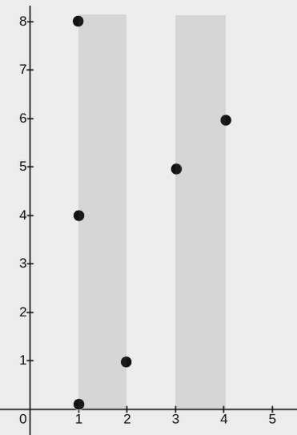
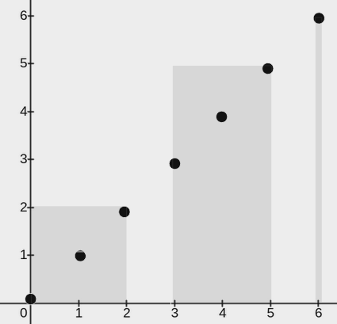
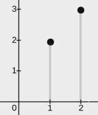

| Category | Difficulty | Likes | Dislikes |
|---|---|---|---|
| Algorithms | Medium | 107 | 8 |
microsoft
You are given a 2D integer array points, where points[i] = [xi, yi]. You are also given an integer w. Your task is to cover all the given points with rectangles.
Each rectangle has its lower end at some point (x1, 0) and its upper end at some point (x2, y2), where x1 <= x2, y2 >= 0, and the condition x2 - x1 <= w must be satisfied for each rectangle.
A point is considered covered by a rectangle if it lies within or on the boundary of the rectangle.
Return an integer denoting the minimum number of rectangles needed so that each point is covered by at least one rectangle.
Note: A point may be covered by more than one rectangle.
Example 1:

Input: points = [[2,1],[1,0],[1,4],[1,8],[3,5],[4,6]], w = 1
Output: 2
Explanation:
The image above shows one possible placement of rectangles to cover the points:
(1, 0) and its upper end at (2, 8)(3, 0) and its upper end at (4, 8)Example 2:

Input: points = [[0,0],[1,1],[2,2],[3,3],[4,4],[5,5],[6,6]], w = 2
Output: 3
Explanation:
The image above shows one possible placement of rectangles to cover the points:
(0, 0) and its upper end at (2, 2)(3, 0) and its upper end at (5, 5)(6, 0) and its upper end at (6, 6)Example 3:

Input: points = [[2,3],[1,2]], w = 0
Output: 2
Explanation:
The image above shows one possible placement of rectangles to cover the points:
(1, 0) and its upper end at (1, 2)(2, 0) and its upper end at (2, 3)
Constraints:
1 <= points.length <= 105points[i].length == 20 <= xi == points[i][0] <= 1090 <= yi == points[i][1] <= 1090 <= w <= 109(xi, yi) are distinct.